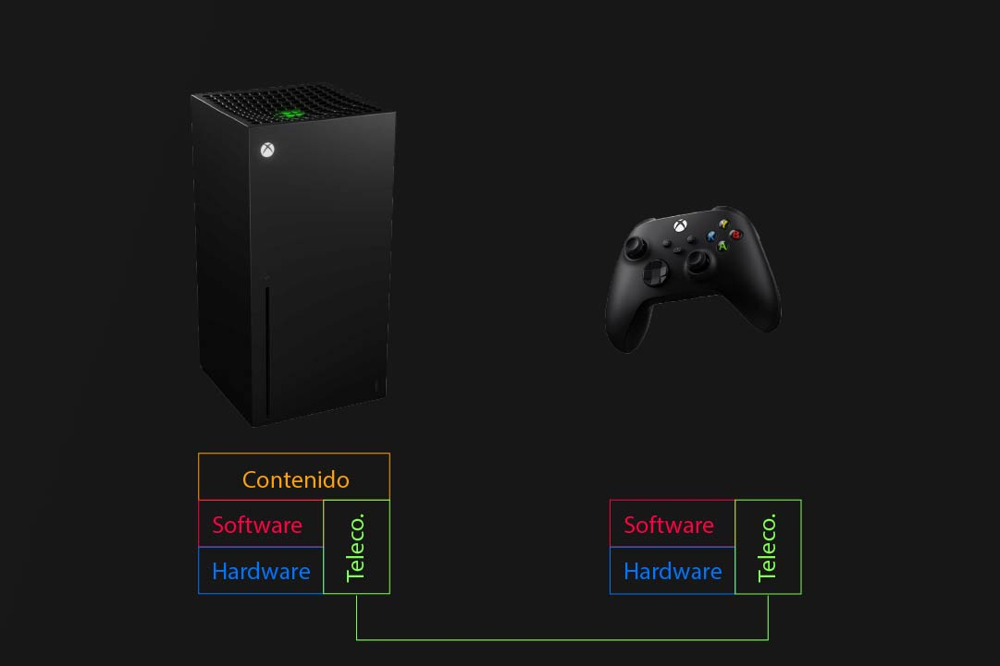
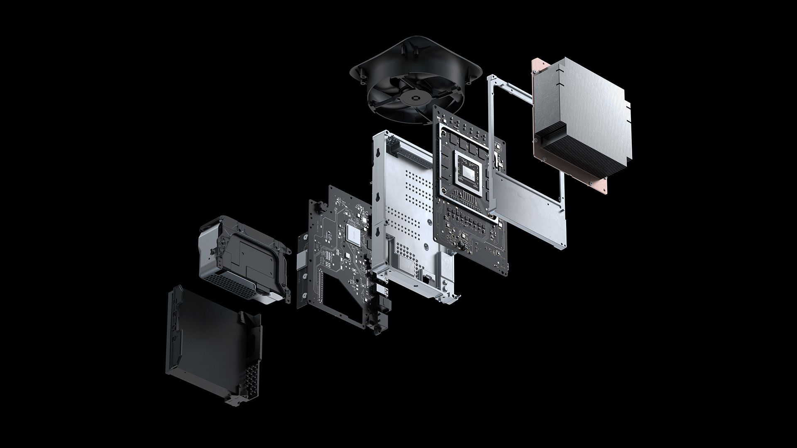

Xbox Series X
Home
Principal
Comprar
Más información
Prueba
Xbox Series X.
Que es la xbox series x
Slogan
Contenido principal
Más información
Sistema Multimedia Distribuido Multipropósito (SMDM)

¿Por qué la Xbox Series X es un SMDM?
Ruido Blanco
Contenido principal
¿Qué es la técnica Pomodoro?

Características técnicas
Ruido Blanco
Contenido principal
¿Qué es la técnica Pomodoro?
Potencia, retrocompatibilidad y más
Ruido Blanco
Contenido principal
¿Qué es la técnica Pomodoro?
Potencia, retrocompatibilidad y más
Ruido Blanco
Contenido principal
¿Qué es la técnica Pomodoro?